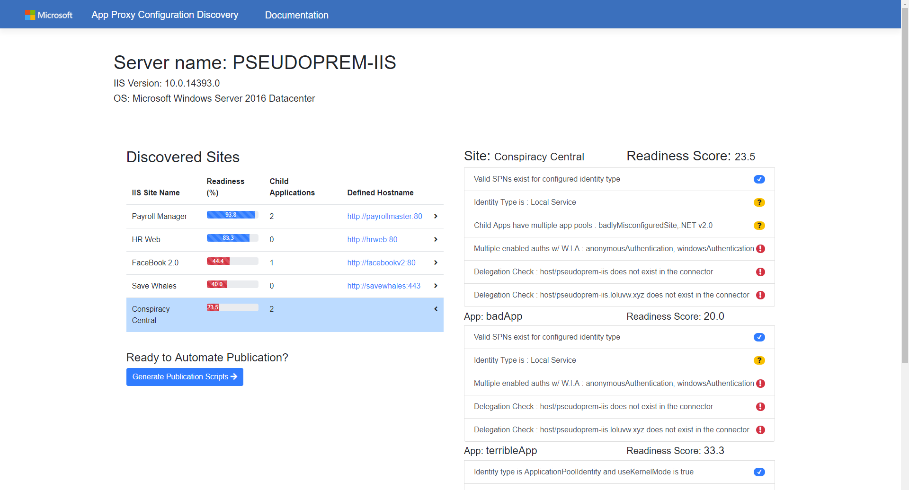
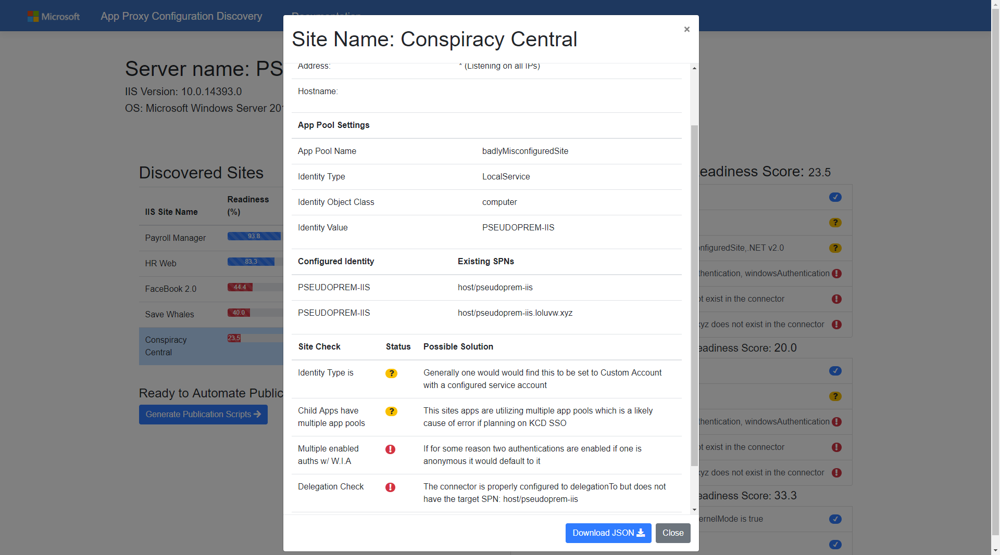

Documentation
Leave feedback!
Documentation
Quick Summary
Background
Azure AD Application Proxy provides remote access as a service which enables customer to provide their users a cloud experience for their on-premise applications, while leveraging the security of Azure AD.
This tool seeks to automate the configuration discovery and diagnosis of potential App Proxy configuration mistakes / requirements necessary to publish on-premise web applications to Azure AD via App Proxy.
The input to this tool can vary, but is most likely just the name of your Azure AD connector machine. The output is either a generated html view containing the configuration analysis or a raw json blob that can be consumed manually.
Intended Audience
This tool is intended to be used by those seeking to publish on-premise apps to Azure AD via App Proxy. There is a strong focus on aiding those with Windows Integrated Authentication apps who seek to enable SSO via Kerberos Constrained Delegation (KCD).
This tool will be less useful for those seeking to publish claims based / anonymous authentication apps due to the configuration possibilities.
The best way to conceptualize this tool is to think of it as a sanity check, helping to find the most common configuration errors. By no means is this tool a one stop fix all.
What this offers
- Configuration discovery for IIS servers
- Connector configuration discovery
- Configuration analysis in context of App Proxy
- Remediation tips / links
- Auto generation of publication scripts for ready sites / apps
Requirements
- Admin permissions to IIS Server
- IIS server 2008+
- PowerShell v4
- IE / Edge / Chrome
View the Demo here!
How it Works
When the PowerShell script is first executed it will query the relevant configuration data, parsing and building a configuration object along the way.
It will then convert this to JSON and inject this json into a js file that will be located in the data directory. When the index.html is opened another js file will parse the json, perform an analysis, then dynamically render the view.
From here the generated GUI can be used to find misconfigured settings, then offer assistance on how these settings can be modified such that the application can be published.
After modifying the settings such that there are no errors, one can generate a publication script for either just an individual nested application, or the entire site. This can be done by selecting an app in the right side column, or by selecting the site in the right side column.
How to Use
Download the tool or clone the repository
Download ToolMove the tool to your IIS server, open up PowerShell with admin permissions. Navigate to the tool root directory where the .ps1 lives and execute one of the following:
If you have already setup your connector, you can pass the servers name:
configurationDiscovery -connectorName "[connector server name here]"
If you have NOT setup your connector:
configurationDiscovery
If you would just like the JSON output:
configurationDiscovery -onlyJson "true"
If you would just like to point to the root directory
configurationDiscovery -dirPath "[path to source]"
If you see an error regarding execution policy you may need to run:
Set-ExecutionPolicy -Scope Process -ExecutionPolicy Bypass
**Note that currently you can only pass a single connector name. This will attempt to install the Windows feature "RSAT-AD-PowerShell" if it is not installed already. It must do this so that it can query the connectors delegation configuration.
Now open the index.html file in edge or chrome to interact with the analysis GUI. The parsed configuration data is stored in the data/ directory.
Interacting with the GUI
There are really only 3 main activities you can preform when interacting with the index.html GUI:
- Clicking a site to view a list summary of the checked configuration
- Clicking a list item in the summary group to view detailed information and tips on how to remediate
- Clicking the "Generate Publication Scripts" button to head over to the bulk automated publication feature of this tool
#index.html - Summary View
The purpose of this is to show a quick summary of the analysis. Each list item details a specific check performed by the analysis. Clicking one of these items opens up a modal with detailed information.
#index.html - Detailed View
The purpose of this is to show more details about the clicked site or app but also possible solutions to help fix failed tips.
Technical Details
Decision Tree
Once the checks have been finalized this will contain a visualization of how the analysis is performed
In Development
The auto generation feature has just been added, though it should theoretically be able to validate the input by querying Azure AD after authentication.
What's Next
Currently this tool has not been tested outside of lab environments, the idea is that after trial runs additional improvements should be made.